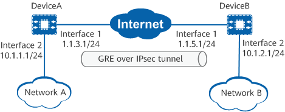

Example for Establishing a GRE over IPsec Tunnel Using an IPsec Profile
Networking Requirements
As shown in Figure 1, Network A and Network B are connected through DeviceA and DeviceB. Users on Network A need to securely access resources on Network B through a GRE tunnel. GRE cannot authenticate or encrypt packets. Therefore, IPsec needs to be configured to protect traffic from Network A to Network B.

In this example, interface 1 and interface 2 represent 10GE 0/0/1 and 10GE 0/0/2, respectively.

Item |
Data |
|---|---|
DeviceA |
Interface: 10GE 0/0/2 IP address: 10.1.1.1/24 |
Interface: 10GE 0/0/1 IP address: 1.1.3.1/24 |
|
GRE tunnel interface configuration Source IP address: 1.1.3.1 Destination IP address: 1.1.5.1 IP address: any address that does not conflict with other IP addresses |
|
IPsec policy configuration Authentication type: Pre-shared key PSK: YsHsjx_202206 Local ID type: IP address Remote ID: IP address |
|
DeviceB |
Interface: 10GE 0/0/1 IP address: 1.1.5.1/24 |
Interface: 10GE 0/0/2 IP address: 10.1.2.1/24 |
|
GRE tunnel interface configuration Source IP address: 1.1.5.1 Destination IP address: 1.1.3.1 IP address: any address that does not conflict with other IP addresses |
|
IPsec policy configuration Authentication type: Pre-shared key PSK: YsHsjx_202206 Local ID type: IP address Remote ID: IP address |
Configuration Roadmap
This example uses default security algorithms of IPsec.
For security purposes, you are advised not to use the weak security algorithm or weak security protocol of this feature. If you must use such a weak security algorithm or protocol, run the install feature-software WEAKEA command to install the weak security algorithm or protocol feature package WEAKEA.
- Perform basic interface configurations.
- Configure static routes to ensure that there are reachable routes between both ends.
- Configure a GRE tunnel interface and a forwarding route for the tunnel interface to direct the data flows to be protected by IPsec to the interface.
- Configure an IPsec profile.
Procedure
- Perform basic interface configurations on DeviceA.
<HUAWEI> system-view [HUAWEI] sysname DeviceA [DeviceA] interface 10ge 0/0/2 [DeviceA-10GE0/0/2] ip address 10.1.1.1 24 [DeviceA-10GE0/0/2] quit [DeviceA] interface 10ge 0/0/1 [DeviceA-10GE0/0/1] ip address 1.1.3.1 24 [DeviceA-10GE0/0/1] quit
- Configure a GRE tunnel interface on DeviceA.
[DeviceA] interface tunnel 1 [DeviceA-Tunnel1] tunnel-protocol gre [DeviceA-Tunnel1] ip address 2.1.1.1 24 [DeviceA-Tunnel1] source 1.1.3.1 [DeviceA-Tunnel1] destination 1.1.5.1 [DeviceA-Tunnel1] quit
The IP address of the tunnel interface can be any idle IP address. When routes with the tunnel interface as the next hop need to be generated through dynamic routing protocols, the IP addresses of the interfaces at both ends of the GRE tunnel must belong to the same network segment.
- Configure a static route from DeviceA to Network B. The following assumes that the next hop of the route with the outbound interface 10GE 0/0/1 is 1.1.3.2. Configure a forwarding route for the tunnel interface to direct the data flows to be protected by IPsec to the interface.
[DeviceA] ip route-static 1.1.5.0 255.255.255.0 10ge 0/0/1 1.1.3.2 [DeviceA] ip route-static 10.1.2.0 255.255.255.0 tunnel 1
- Configure an IPsec profile and apply it to the tunnel interface.
- Perform basic interface configurations on DeviceB.
<HUAWEI> system-view [HUAWEI] sysname DeviceB [DeviceB] interface 10ge 0/0/2 [DeviceB-10GE0/0/2] ip address 10.1.2.1 24 [DeviceB-10GE0/0/2] quit [DeviceB] interface 10ge 0/0/1 [DeviceB-10GE0/0/1] ip address 1.1.5.1 24 [DeviceB-10GE0/0/1] quit
- Configure a GRE tunnel interface on DeviceB.
[DeviceB] interface tunnel 1 [DeviceB-Tunnel1] tunnel-protocol gre [DeviceB-Tunnel1] ip address 2.1.1.2 24 [DeviceB-Tunnel1] source 1.1.5.1 [DeviceB-Tunnel1] destination 1.1.3.1 [DeviceB-Tunnel1] quit
The IP address of the tunnel interface can be any idle IP address. When routes with the tunnel interface as the next hop need to be generated through dynamic routing protocols, the IP addresses of the interfaces at both ends of the GRE tunnel must belong to the same network segment.
- Configure a static route from DeviceB to Network A. The following assumes that the next hop of the route with the outbound interface 10GE 0/0/1 is 1.1.5.2. Configure a forwarding route for the tunnel interface to direct the data flows to be protected by IPsec to the interface.
[DeviceB] ip route-static 1.1.3.0 255.255.255.0 10ge 0/0/1 1.1.5.2 [DeviceB] ip route-static 10.1.1.0 255.255.255.0 Tunnel1
- Configure an IPsec profile and apply it to the tunnel interface.
Verifying the Configuration
<DeviceA> display ike sa Total number of IKE SA in all CPU : 2 Total number of phase 1 SA in all CPU : 1 Total number of phase 2 SA in all CPU : 1 Flag Description: RD--READY ST--STAYALIVE RL--REPLACED FD--FADING TO--TIMEOUT HRT--HEARTBEAT LKG--LAST KNOWN GOOD SEQ NO. BCK--BACKED UP M--ACTIVE S--STANDBY A--ALONE NEG--NEGOTIATING Slot 0, cpu 1 IKE SA information : Number of IKE SA : 2, number of IKE SA1: 1, number of IKE SA2: 1 --------------------------------------------------------------------------------------- Conn-ID Peer VPN Flag(s) Phase RemoteType RemoteID --------------------------------------------------------------------------------------- 33554442 1.1.5.1/500 RD|A v2:2 IP 1.1.5.1 33554440 1.1.5.1/500 RD|ST|A v2:1 IP 1.1.5.1 ---------------------------------------------------------------------------------------
<DeviceA> display ipsec sa Slot 0, cpu 1 ipsec sa information: =============================== Interface: 10GE0/0/1 =============================== ----------------------------- IPSec policy name: "map1" Sequence number : 10 Acl group : 3000/IPv4 Acl rule : 5 Mode : ISAKMP --------------------------- Connection ID : 33554456 Encapsulation mode: Tunnel Holding time : 0d 13h 30m 13s Tunnel local : 1.1.3.1/500 Tunnel remote : 1.1.5.1/500 Flow source : 1.1.3.1/255.255.255.255 0/0-65535 Flow destination : 1.1.5.1/255.255.255.255 0/0-65535 [Outbound ESP SAs] SPI: 10914757 (0xa68bc5) Proposal: ESP-ENCRYPT-AES-GCM-256 SA remaining soft duration (kilobytes/sec): 0/512054 SA remaining hard duration (kilobytes/sec): 0/602772 Max sent sequence-number: 5 UDP encapsulation used for NAT traversal: N SA encrypted packets (number/bytes): 5/540 [Inbound ESP SAs] SPI: 276363621 (0x1078f965) Proposal: ESP-ENCRYPT-AES-GCM-256 SA remaining soft duration (kilobytes/sec): 0/530198 SA remaining hard duration (kilobytes/sec): 0/602772 Max received sequence-number: 5 UDP encapsulation used for NAT traversal: N SA decrypted packets (number/bytes): 5/540 Anti-replay : Enable Anti-replay window size: 1024
Configuration Scripts
- DeviceA
# sysname DeviceA # ipsec proposal tran1 esp authentication-algorithm sha2-256 esp encryption-algorithm aes-256-gcm-128 # ike proposal 10 encryption-algorithm aes-gcm-256 dh group14 authentication-algorithm sha2-256 authentication-method pre-share integrity-algorithm hmac-sha2-256 prf hmac-sha2-256 # ike peer b pre-shared-key %+%##!!!!!!!!!"!!!!"!!!!*!!!!0wh:W'|^cWVEaw==)"2Zwo_o2GIV8LeaRb>!!!!!2jp5!!!!!!9!!!!NI4E((n_/HFtL35tXwpVh+h#IMXhhW!!!!!!!!!!%+%# ike-proposal 10 # ipsec profile pro1 ike-peer b proposal tran1 # interface 10GE0/0/2 ip address 10.1.1.1 255.255.255.0 # interface 10GE0/0/1 ip address 1.1.3.1 255.255.255.0 # interface Tunnel1 ip address 2.1.1.1 255.255.255.0 tunnel-protocol gre source 1.1.3.1 destination 1.1.5.1 ipsec profile pro1 # ip route-static 10.1.2.0 255.255.255.0 tunnel 1 ip route-static 1.1.5.0 255.255.255.0 10GE 0/0/1 1.1.3.2 # return
- DeviceB
# sysname DeviceB # ipsec proposal tran1 esp authentication-algorithm sha2-256 esp encryption-algorithm aes-256-gcm-128 # ike proposal 10 encryption-algorithm aes-gcm-256 dh group14 authentication-algorithm sha2-256 authentication-method pre-share integrity-algorithm hmac-sha2-256 prf hmac-sha2-256 # ike peer a pre-shared-key %+%##!!!!!!!!!"!!!!"!!!!*!!!!0wh:W'|^cWVEaw==)"2Zwo_o2GIV8LeaRb>!!!!!2jp5!!!!!!9!!!!NI4E((n_/HFtL35tXwpVh+h#IMXhhW!!!!!!!!!!%+%# ike-proposal 10 # ipsec profile pro1 ike-peer a proposal tran1 # interface 10GE0/0/2 ip address 10.1.2.1 255.255.255.0 # interface 10GE0/0/1 ip address 1.1.5.1 255.255.255.0 # interface Tunnel1 ip address 2.1.1.2 255.255.255.0 tunnel-protocol gre source 1.1.5.1 destination 1.1.3.1 ipsec profile pro1 # ip route-static 10.1.1.0 255.255.255.0 Tunnel 1 ip route-static 1.1.3.0 255.255.255.0 10GE 0/0/1 1.1.5.2 # return